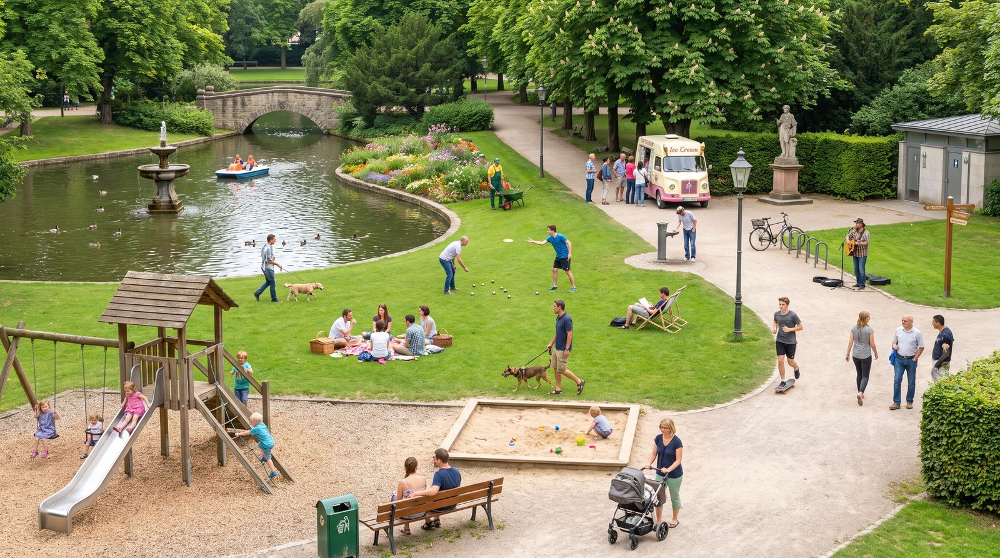

deutschoderwas · Sprachspielclub · Samstag, 29. August · ab B1
Ab in den Park
Heute geht es um den Park und alles, was darin steckt — suchen, raten, Präpositionen üben, Tabu spielen, frei sprechen. Und danach das große Quiz quer durch den ganzen Park.
Schaut euch den Park in Ruhe an. Beschreibt reihum, was ihr seht — und zwar genau: nicht „da spielen Kinder“, sondern „vorne links im Sandkasten sitzen zwei Kinder und graben mit einer roten Schaufel“.

💡 Erste Runde: Jede Person sucht sich eine Ecke des Bildes aus und erzählt eine Minute lang, was dort passiert. Die anderen dürfen danach genau zwei Fragen dazu stellen. Wer nichts mehr findet, gibt weiter.
Findet diese Sachen
Tippt ein Wort an, wenn ihr es gefunden und die Lage beschrieben habt: „Der Mülleimer steht vorne rechts neben der Bank, direkt am Weg.“
0 von 28 gefunden
📖 Alle Parkwörter mit Beispielsatz und Tipp — zum Nachschlagen und Vorlesen
💡 Spiel dazu: Wörter verdecken. Eine Person liest nur den Beispielsatz vor und lässt das Wort weg — die anderen ergänzen es mit Artikel. Wer es hat, liest den nächsten Satz.
🎁 „Ich sehe etwas, das …“
Eine Person zieht ein geheimes Wort aus dem Bild und beschreibt nur mit Präpositionen, wo es ist — die anderen raten, was es ist!
🤫 Dein geheimes Wort
Bereit?
Beschreibe seine Lage — aber sag das Wort nicht!
🗣️ So beschreibst du: „Es befindet sich …“ · „Es liegt / steht / hängt / schwimmt …“ + Präposition + Dativ.
🏆 Spielregeln: Nenne mindestens zwei Präpositionen, bevor die anderen raten dürfen. Wer richtig rät, bekommt einen Punkt und ist als Nächstes dran.
Wo? → Dativ
Frage Wo? (Lage) → Wechselpräposition + Dativ. Bildet zu jeder einen eigenen Satz zum Bild.
in
„Die Kinder spielen im Sandkasten.“
an
„Der Hund ist an der Leine.“
auf
„Die Enten schwimmen auf dem Teich.“
unter
„Die Picknickdecke liegt unter dem Kastanienbaum.“
über
„Die Zweige hängen über dem Kiesweg.“
neben
„Der Papierkorb steht neben der Parkbank.“
vor
„Eine lange Schlange wartet vor dem Eiswagen.“
hinter
„Der Hundeauslauf liegt hinter der Hecke.“
zwischen
„Der Springbrunnen steht zwischen dem Teich und dem Blumenbeet.“
🧠 Dativ-Artikel: der → dem · das → dem · die → der · Plural → den (+n). „auf dem Klettergerüst“, „an der Schaukel“, „zwischen den Bäumen“.
Wohin? → Akkusativ
Etwas bewegt sich — Frage Wohin? (Richtung) → Akkusativ.
in + Akk.
„Er wirft den Becher in den Papierkorb.“
auf + Akk.
„Wir legen die Decke auf die Wiese.“
an + Akk.
„Sie nimmt den Hund an die Leine.“
unter + Akk.
„Wir setzen uns unter den Baum.“
über + Akk.
„Die Kinder rennen über die Brücke.“
hinter + Akk.
„Der Ball rollt hinter die Hecke.“
🧠 Akkusativ-Artikel: der → den · das → das · die → die · Plural → die. Merksatz: Wo? = Dativ (es ist schon da) · Wohin? = Akkusativ (es bewegt sich dorthin).
🎲 Spiel dazu: Eine Person sagt einen Satz mit Wo?, die nächste macht daraus einen Satz mit Wohin? — „Der Hund sitzt neben der Bank.“ → „Der Hund läuft neben die Bank.“ Wer den Fall verwechselt, gibt weiter.
🔤 Tabu
Erkläre das Wort oben — aber ohne die verbotenen Wörter zu benutzen! Die anderen raten. Tippe auf „Neue Karte“. Tipp: Fang mit „Das ist ein Ort, an dem …“ oder „Das braucht man, wenn …“ an.
⏱️ Spielidee: 60 Sekunden pro Runde. Für jedes erratene Wort gibt es einen Punkt. Benutzt jemand ein verbotenes Wort, ist die Karte futsch. Zwei Teams treten gegeneinander an!
🗣️ Frei sprechen
Sprecht frei — nutzt den Wortschatz aus dem Bild.
Erinnerung
In welchen Park bist du als Kind gegangen? Was hast du dort am liebsten gemacht?
Beschreiben
Beschreibe deinen Lieblingsplatz im Grünen so genau, dass die anderen ihn vor sich sehen.
Vergleich
Park, Wald oder Balkon — wo erholst du dich am besten, und warum?
Regeln
Welche Regeln gelten in einem deutschen Park? Nenne drei — und sag, warum es sie gibt.
Kultur
Wie sehen Parks in deinem Herkunftsland aus? Was gibt es dort, was hier fehlt?
Geschichte
Erfinde eine Geschichte über das ältere Ehepaar auf der Bank. Wie lange sitzen sie schon da?
Diskussion
Grillen im Park: verbieten, erlauben oder nur auf ausgewiesenen Plätzen?
Streit
Ein Hund ohne Leine rennt über deine Picknickdecke. Was sagst du dem Besitzer?
🔑 Redemittel fürs Bild: „Ganz vorne / hinten sieht man …“ · „Direkt daneben …“ · „Mitten im Bild / in der Ecke …“ · „Links / rechts von … befindet sich …“ · „Im Vordergrund / im Hintergrund …“
🎬 Rollenspiele im Park
Zieht eine Karte, verteilt die zwei Rollen und spielt die Szene zwei bis drei Minuten. Die Wörter unten dürfen — sollen! — vorkommen.
🗣️ Nach jeder Szene, ein Satz reihum: „Ich hätte an deiner Stelle gesagt: …“ — so hört ihr drei Varianten für dieselbe Situation statt nur einer.
🏆 Das große Park-Quiz
Zehn Runden, sechzig Fragen — vom Spielplatz über den Teich und die Parkordnung bis zu den Redewendungen, die aus der Natur kommen. Wählt eine Runde oder spielt einfach durch.
Runde 1 · Frage 10 von 6
🏅 Als Wettkampf: Zwei Teams, abwechselnd. Wer die richtige Antwort hat, muss zusätzlich einen eigenen Satz mit dem Wort bilden — erst dann gibt es den Punkt.